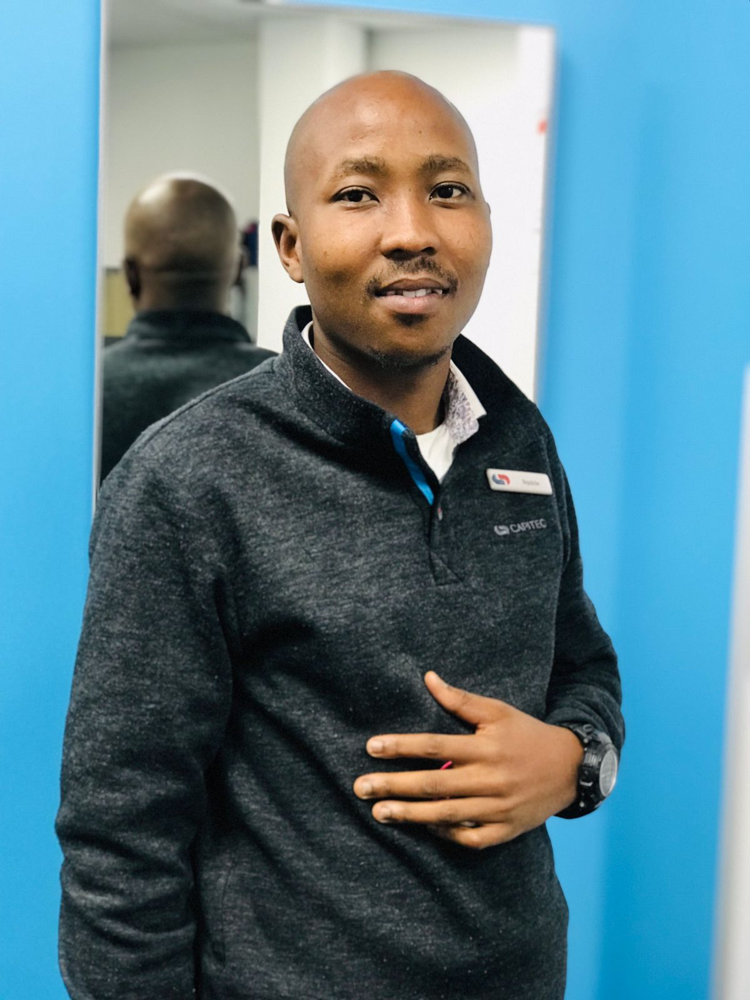

"WE CANNOT QUIT, AND WE WILL NEVER QUIT"
Hello! I'm Nqobile Chamane, a passionate individual with a background in Geography and Statistics, currently pursuing a degree in BSc Informatics. Explore my website to learn more about me, my skills, and how to get in touch.
A young and vibrant academia who has embarked on a journey to attain a degree in Geography and Statistics at the University of the Free State in 2014 and is currently pursuing a degree in BSc Informatics at UNISA. I am adept at functions of Statistics including Data Capturing, Data Analysis, usage of R-Studio and SAS programs. I also specialize in Rural Development, Environmental Management, and Urban Development and Spatial Planning.
Feel free to reach out to me via email or phone:
Social Media Accounts